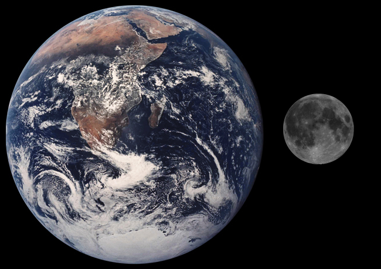
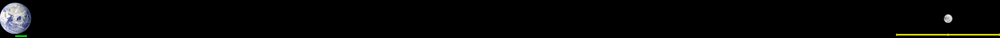
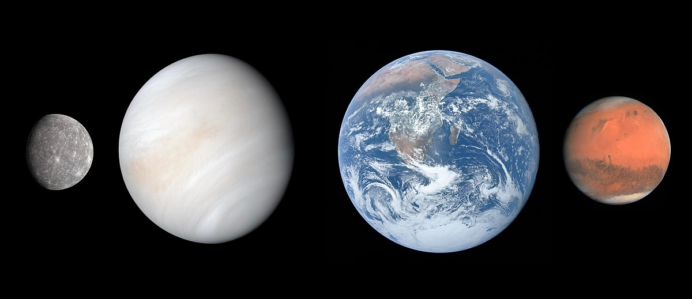
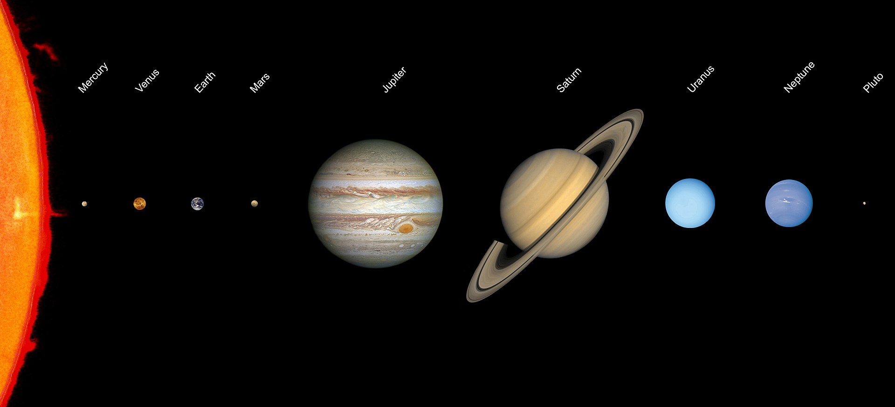

UniverseTrip Tour -
Highlights
Erkunde das Universum bis an die Grenzen des sichtbaren Universums. Diese Tour veranschaulicht die Entfernungen und zeigt auf eindrucksvolle Art und Weise die Juwelen des Nachthimmels.
Radius: 0.0000001 light years

Der Radius 0.0000001 Lj entspricht ~3,2 Lichtsekunden.
Das Erde-Mond System ist sichtbar. Der Mond umkreist in einem Abstand von ca. 384.400 km (~1,3 Lichtsekunden) die Erde und ist mit ca. 3.470km rund 1/4 so groß wie die Erde.

Die tatsächlichen Größenverhältnisse kann man anhand der folgenden Darstellung besser abschätzen. Sowohl die Durchmesser als auch der Abstand Erde - Mond sind im gleichen Maßstab dargestellt.

Radius: 0.000001 light years

Der Radius 0.000001 Lj entspricht ~32 Lichtsekunden.
Das Erde-Mond System ist weiterhin sichtbar. Ansonsten leerer Raum.
Radius: 0.00001 light years

Der Radius 0.00001 Lj entspricht ~5,3 Lichtminuten.
Die Orbits (blaue Linien) der Nachbarplaneten Mars, Venus und Merkur ganz rechts, werden allmählich sichtbar.
Radius: 0.0001 light years

Der Radius 0.0001 Lj entspricht 53 Lichtminuten. Das Licht benötigt von der Sonne ca. 8,3 Minuten bis zur Erde.
Das innere Sonnensystem mit den Gesteinsplaneten Merkur, Venus, Erde und Mars sowie der Sonne ist sichtbar.
Aufgrund von physikalischen zusammenhängen in der Entstehung des Sonnensystems aus einer Staub- und Gaswolke (innen heiß, außen kalt) entstanden die Gesteinsplaneten im inneren Sonnensysten relativ nahe zur Sonne, während die Gasriesen Jupiter, Saturn, Uranus und Neptun im äußeren Sonnensystem liegen.

Radius: 0.001 light years

Der Radius 0.001 Lj entspricht 8,8 Lichtstunden.
Die inneren Gesteinsplaneten sind jetzt nur mehr als kleine Kreise nahe der Sonne sichtbar. Die Gasriesen Jupiter, Saturn, Uranus und Neptun sowie der Zwergplanet Pluto sind nun deutlich erkennbar. Das nachstehende Bild zeigt die Größenverhältnisse der Planeten im Sonnensystem.

Radius: 0.01 light years

Der Radius 0.01 Lj entspricht XX Lichtminuten.
Placeholder für weitere Informationen.
Radius: 0.1 light years

Der Radius 0.1 Lj entspricht XX Lichtminuten.
Placeholder für weitere Informationen.
Radius: 1 light years

Placeholder für weitere Informationen.
Radius: 10 light years

Placeholder für weitere Informationen.
Radius: 100 light years

Placeholder für weitere Informationen.
Radius: 1.000 light years

Placeholder für weitere Informationen.
Radius: 10.000 light years

Placeholder für weitere Informationen.
Radius: 100.000 light years

Placeholder für weitere Informationen.
Radius: 1.000.000 light years

Placeholder für weitere Informationen.
Radius: 10.000.000 light years

Placeholder für weitere Informationen.
Radius: 100.000.000 light years

Placeholder für weitere Informationen.
Radius: 1.000.000.000 light years

Placeholder für weitere Informationen.
Radius: 10.000.000.000 light years

Placeholder für weitere Informationen.
Radius: 50.000.000.000 light years

Placeholder für weitere Informationen.
Sources
[1] Gemeinfrei, https://commons.wikimedia.org/w/index.php?curid=264039
[2] CC BY 2.5, https://commons.wikimedia.org/w/index.php?curid=1109958
[3] By Mercury image: NASA/JHUAPLVenus image: NASA/Johns Hopkins University Applied Physics Laboratory/Carnegie Institution of Washington Earth image: NASA/Apollo 17 crew, retouch by User:Aaron1a12Mars image: ESA/MPS/UPD/LAM/IAA/RSSD/INTA/UPM/DASP/IDA - Mercury Globe-MESSENGER mosaic centered at 0degN-0degE.jpg Venus 2 Approach Image.jpgThe Blue Marble (remastered).jpgOSIRIS Mars true color.jpg, Public Domain, https://commons.wikimedia.org/w/index.php?curid=92818238
[4] By File:Solar system scale 2 wide.jpg: * File:Solar system scale.jpg: Lunar and Planetary LaboratoryFile:Jupiter and its shrunken Great Red Spot.jpg: NASA, ESA, and A. Simon (Goddard Space Flight Center)derivative work: Martin KraftFile:Sun in February (transparent).png: HalloweenNightderivative work: JCPagc2015 - This file was derived from:Solar system scale 2 wide.jpg:Sun in February (transparent).png:, Public Domain, https://commons.wikimedia.org/w/index.php?curid=71869737